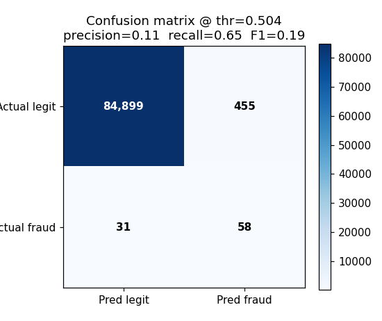
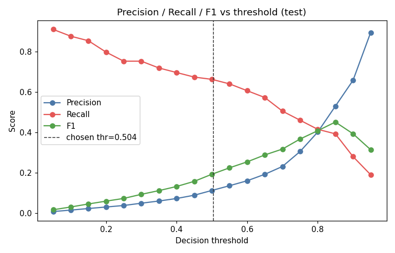
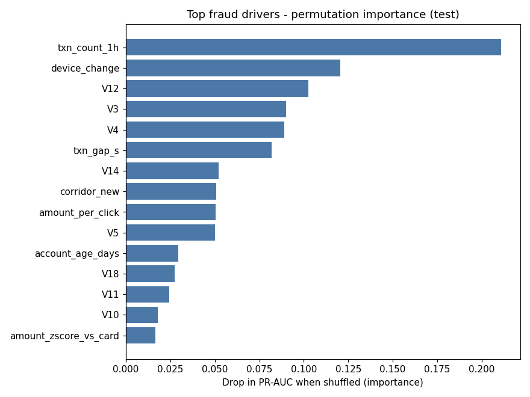
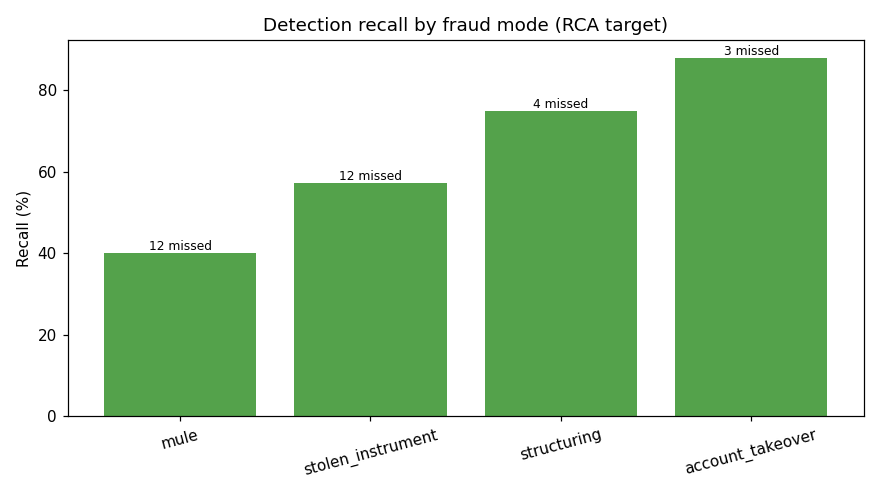

End-to-end fraud detection on public card-fraud data mapped to a remittance context:
feature engineering, a gradient-boosted model with out-of-time evaluation, root-cause analysis,
and a power-gated A/B test.
Why the aggressive point is the right call: a missed fraud costs ~the
transaction value (avg ~$161) while a false positive costs ~$4 of review friction — an implied
~40.3:1 cost ratio. At that ratio it is rational to accept ~40 false alarms to stop one
fraud, so the cost-minimizing threshold sits at high recall.
Confusion @ operating point

Precision / recall / F1 vs threshold

Root-cause analysis
Top drivers are 1-hour velocity, device change, new-corridor and anonymized network
signals. The model catches account-takeover well but under-catches mule fraud, which hides
in normal new-account behavior. → full RCA writeup.
Top fraud drivers

Recall by fraud mode

A/B test — step-up verification (simulated, power-gated)
Completed-fraud rate 3.7% → 2.0% (−47% relative), but the test
was underpowered so p=0.056. Decision: HOLD — extend the test — we gate on effect
size and significance, not a single near-miss p-value.
→ A/B writeup.